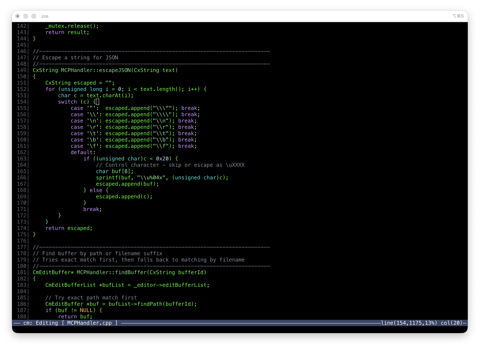
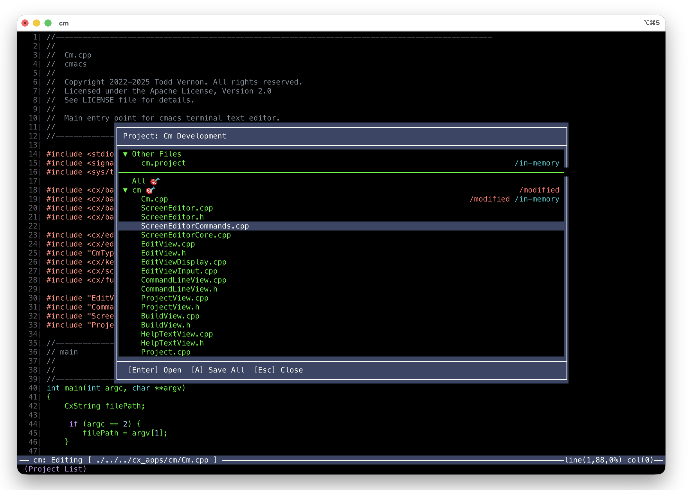
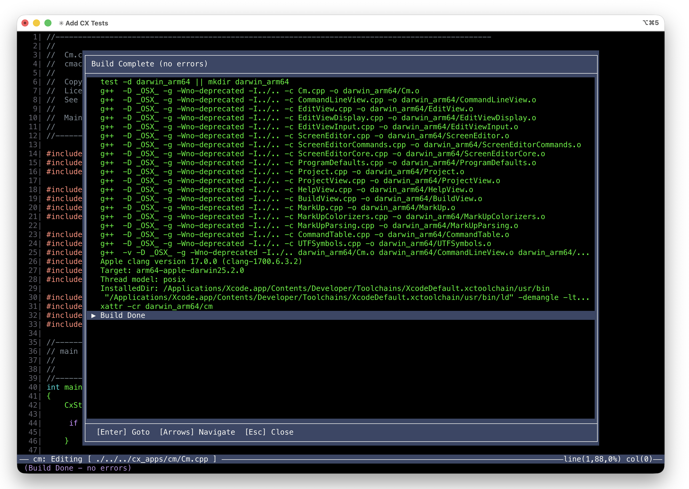

A full-screen terminal editor with project management, integrated builds, and syntax highlighting. Works equally well with mouse or keyboard — click and drag to edit, or keep your hands on the keys. Neither is a fallback; both are first-class. Compiles on your Mac M3, on Linux, and on decades-old Unix workstations. Zero dependencies. Just make.
macOS users: Do not run cm directly until you run bash install.sh from the extracted archive. The installer clears the macOS Gatekeeper restriction automatically.

Click to place the cursor, drag to select, scroll with the wheel. Or do it all from the keyboard. Neither path is a fallback — every operation works fully both ways. Use whichever fits the moment.
Need to edit on a remote box? Just run it. No X forwarding, no port tunnels, no VS Code remote extensions. It's a terminal app — it goes where your terminal goes.
No Boost. No CMake. No autoconf. No package manager. Built on the cx portable C++ library. Compiles in seconds on every target platform.
Same source builds on macOS, Linux, Solaris, SunOS, IRIX, and NetBSD. Targets compilers from GCC 2.95 to Clang 16. If the box has a C++ compiler, cm probably runs on it.
Features
Not a toy. Not a vi clone. The things you open an editor to do — find, replace, build, navigate errors — except it launches instantly and runs on machines from 1996.
Click to position the cursor, drag to select text, scroll with the wheel, navigate project dialogs and build output with the mouse. Or do all of it from the keyboard. There's no "mouse mode" and no "keyboard mode" — both work everywhere, all the time. Use whichever is faster in the moment.
Like nano, just open a file and start typing. No mode switching, no learning curve. But with real editor power when you need it — search, replace, split screens, and more.
Press ESC and type one letter — the shared prefix auto-fills and the matches narrow. Type one more and the unique match executes. No memorization, no cheat sheets. You explore a tree, two keystrokes at a time.
Define your project once with a simple .project file. Jump between source files with a keystroke. Kick off builds from the editor. Navigate to errors instantly.
Full 24-bit RGB color support on modern terminals. C, C++, Python, Markdown, makefiles, and more. Degrades gracefully to 256 or 16 colors on older terminals.
View two files side by side. Compare code, reference documentation, or edit related files together. Switch between views with Ctrl+O.
Run your build command without leaving the editor. Compiler errors are parsed automatically — navigate directly to error locations from the build output.
Built-in box drawing lets you create diagrams and tables right in your source files. The insert-box and insert-symbol commands use a nested completer — type a few letters to find the character you need. Perfect for ASCII art, protocol diagrams, and documentation.
How It Works
Press ESC and a command prompt appears. Type one letter and the category auto-fills. One more letter and the unique match executes. Every command is findable.
Click through each step. The completer auto-fills shared prefixes as you type — and executes the moment there's a unique match. No TAB. No ENTER.
ESC, f, s — that's it. The shared prefix auto-fills, the unique match auto-executes. Every command works this way.
Press Ctrl+P to open the project dialog. Define your project once with a simple .project file listing source files and a build command.
Jump between buffers instantly, switch projects, or kick off a build without leaving the editor. The project dialog shows all open buffers and lets you navigate your codebase with single keystrokes.

Press Ctrl+B to view build output. cmacs captures compiler errors and warnings, parsing file paths and line numbers automatically.
Navigate directly to errors from the build output — the editor opens the file and jumps to the exact line. No more copying paths from terminal output.

Keyboard
Every action works with the mouse and the keyboard. ESC commands for discoverability, Ctrl shortcuts for speed, mouse clicks when your hand is already there. No compromise either way.
Get Started
Grab the binary and go. Or clone the repo, build it yourself, and make it your own.
macOS users: Do not run cm directly until you run bash install.sh from the extracted archive. The installer clears the macOS Gatekeeper restriction automatically.